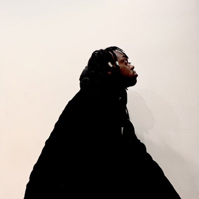

Who is Jerhell ?
Jerhell comes from a family that struggled to get by. He lived with his mother and brother. He came home from his trip to Japan with Luis Mora. His home had gotten worse. Dirt, rubbish and rats everywhere. He knew he had to get out so he did. He moved in with a friend of his named Sueco. The two of them lived with Sueco’s Dad where they began to make Music. After a while Ryan moved in and all three of them began experimenting with sound. He moved in with Sueco Ryan, when Sueco released his song FAST and blew up. When Syndicate Studios launched Jerhell had already been making music for a while but the studio was able to increase the quality of his Music. Jerhell now has 128k monthly Listeners and has released two albums and is still experimenting with his sound to this day.
